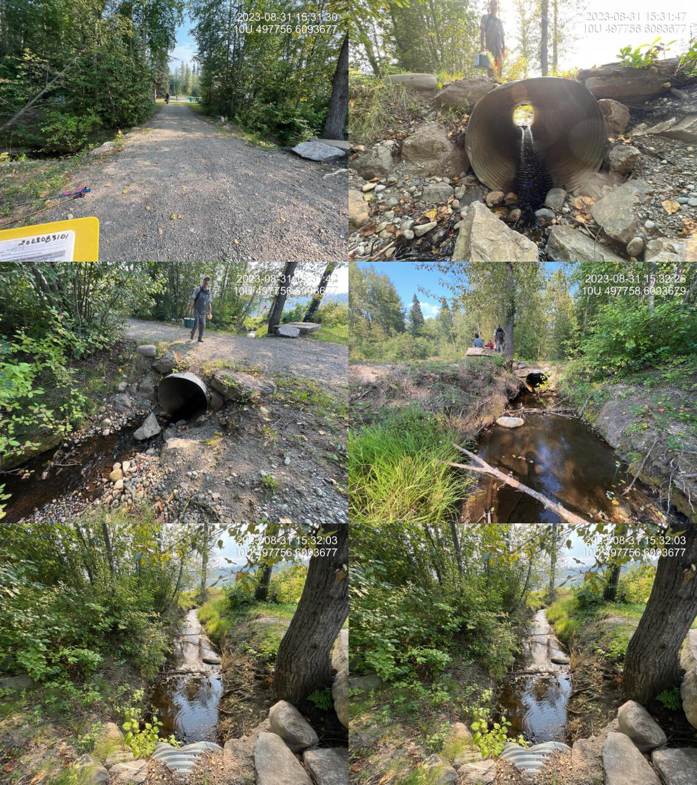

Tributary to McLeod Lake - 198714 & 198666 - Appendix
Site Location
PSCIS crossing 198714 and 198666 are located on Tributary to McLeod Lake. PSCIS crossing 198714 is located on a small private campground road immediately adjacent to the high water mark of McLeod Lake and PSCIS crossing 198666 is located approximately 150m upstream from McLeod Lake under Campground Rd. The stream is situated between McLeod Lake Store and Carp Lake Road which accesses Tse’Khene food and fuel and the residential community of McLeod Lake on the McLeod Lake 1 First Nation Reserve.
Background
At crossing 198714, Tributary to McLeod Lake is a third order stream with a watershed area upstream of the crossing of approximately 11km2. The elevation of the watershed ranges from a maximum of 1128m to 685m at the crossing (Table 5.9). Upstream of the highway, rainbow trout have previously been recorded (Norris [2018] 2024; MoE 2024).
A summary of habitat modelling outputs for the highway crossing are presented in Table 5.10. Modelling information for culvert under the campground road crossing can be assumed to be an addition 120m for potential habitat with a calculated remediation gain of 120m. be A map of the watershed is provided in map attachment 093J.123.
fpr::fpr_table_wshd_sum(site_id = my_site2) %>%
fpr::fpr_kable(caption_text = paste0('Summary of derived upstream watershed statistics for PSCIS crossing ', my_site, '.'),
footnote_text = 'Elev P60 = Elevation at which 60% of the watershed area is above',
scroll = F)| Site | Area Km | Elev Site | Elev Max | Elev Median | Elev P60 | Aspect |
|---|---|---|---|---|---|---|
| 198666 | 11 | 685 | 1128 | 837 | 796 | SSW |
| * Elev P60 = Elevation at which 60% of the watershed area is above |
| Habitat | Potential | Remediation Gain | Remediation Gain (%) |
|---|---|---|---|
| BT Rearing (km) | 5.8 | 2.4 | 41 |
| BT Spawning (km) | 1.8 | 0.8 | 44 |
| BT Network (km) | 24.4 | 4.8 | 20 |
| BT Stream (km) | 21.8 | 3.3 | 15 |
| BT Lake Reservoir (ha) | 0.2 | 0.0 | 0 |
| BT Wetland (ha) | 21.6 | 13.0 | 60 |
| BT Slopeclass03 (km) | 4.1 | 1.9 | 46 |
| BT Slopeclass05 (km) | 4.0 | 1.0 | 25 |
| BT Slopeclass08 (km) | 3.0 | 0.3 | 10 |
| BT Slopeclass15 (km) | 10.4 | 0.1 | 1 |
| * Model data is preliminary and subject to adjustments. |
Stream Characteristics at Crossing
At the time of the survey, PSCIS crossing 198714, located within the campground was un-embedded, non-backwatered and had a culvert slope estimated at 5%. Although the crossing ranked as a barrier to upstream fish passage according to the MoE (2011) provincial protocol, juvenile (>100mm) and adult salmonids are likely able to migrate through the short pipe length (5m) with no outlet drop (Table 5.11).
A deep outlet pool (1m) and a large outlet drop (0.7m) at the Highway 97 crossing (PSCIS 198666) was an indication that the culvert is undersized for the amount of discharge in the watershed. The large outlet drop (0.7m) and extensive length (60m) of the structure likely block upstream migration for all fish life stages and species at all flows. The unembedded and non-backwaered culvert ranked as a barrier to upstream fish passage according to MoE (2011) (Table 5.12).
Water temperature was 12.7\(^\circ\)C, pH was 7.9 and conductivity was 410uS/cm.
| Location and Stream Data |
|
Crossing Characteristics | – |
|---|---|---|---|
| Date | 2023-08-31 | Crossing Sub Type | Round Culvert |
| PSCIS ID | 198714 | Diameter (m) | 1.2 |
| External ID | – | Length (m) | 8 |
| Crew | AI MD | Embedded | No |
| UTM Zone | 10 | Depth Embedded (m) | – |
| Easting | 497758.4 | Resemble Channel | No |
| Northing | 6093674 | Backwatered | No |
| Stream | Tributary to McLeod Lake | Percent Backwatered | – |
| Road | Campground Rd | Fill Depth (m) | 0.5 |
| Road Tenure | MOE | Outlet Drop (m) | 0 |
| Channel Width (m) | 2.3 | Outlet Pool Depth (m) | 0.3 |
| Stream Slope (%) | 2 | Inlet Drop | Yes |
| Beaver Activity | Yes | Slope (%) | 5 |
| Habitat Value | Medium | Valley Fill | Deep Fill |
| Final score | 26 | Barrier Result | Barrier |
| Fix type | Replace with New Open Bottom Structure | Fix Span / Diameter | 10 |
| Photos: From top left clockwise: Road/Site Card, Barrel, Outlet, Downstream, Upstream, Inlet. | |||
| Comments: Small culvert within the campground area. Approximately 40 m upstream of the mouth of the lake. 15:29:22 |
| Location and Stream Data |
|
Crossing Characteristics | – |
|---|---|---|---|
| Date | 2023-08-25 | Crossing Sub Type | Round Culvert |
| PSCIS ID | 198666 | Diameter (m) | 1.2 |
| External ID | – | Length (m) | 60 |
| Crew | AI | Embedded | No |
| UTM Zone | 10 | Depth Embedded (m) | – |
| Easting | 497880.6 | Resemble Channel | No |
| Northing | 6093710 | Backwatered | No |
| Stream | Tributary to McLeod Lake | Percent Backwatered | – |
| Road | Highway 97 | Fill Depth (m) | 9 |
| Road Tenure | MOTI | Outlet Drop (m) | 0.65 |
| Channel Width (m) | 3 | Outlet Pool Depth (m) | 1 |
| Stream Slope (%) | 0.5 | Inlet Drop | No |
| Beaver Activity | No | Slope (%) | 0.5 |
| Habitat Value | Medium | Valley Fill | Deep Fill |
| Final score | 32 | Barrier Result | Barrier |
| Fix type | Replace Structure with Streambed Simulation CBS | Fix Span / Diameter | 4.5 |
| Photos: From top left clockwise: Road/Site Card, Barrel, Outlet, Downstream, Upstream, Inlet. | |||
| Comments: Stream is located between McLeod Lake Store on Highway and TseKhene food and fuel entrance. Most of the watershed drains reservation land. Could potentially be backwatered as an interim solution. Channel width estimated upstream in wetland type habitat so difficult to tell. Upstream end of the pipe is significantly sloped in the upstream direction. Ministry of Transportation chris_culvert_id: 1997114. 12:31:49 |
Stream Characteristics Downstream of 198666
The stream was surveyed upstream from crossing 198714 for 250m (Figures 5.17 - 5.18). In the area surveyed, the stream was noted as having good flow and abundant gravels suitable for rainbow trout spawning. The dominant substrate was gravels with cobbles sub-dominant.The average channel width was 2.8m, the average wetted width was 1.9m, and the average gradient was 2.7%.Total cover amount was rated as moderate with overhanging vegetation dominant. Cover was also present as undercut banks. The habitat was rated as medium value with habitat present suitable for salmonid rearing and spawning.
Stream Characteristics Upstream of 198666
The stream was surveyed upstream from crossing 198666 for 220m beginning at a point accessed approximately 275m upstream of the highway (Figures 5.19 - 5.22). The dominant substrate was fines with fines sub-dominant.The average channel width was 3.4m, the average wetted width was 2.5m, and the average gradient was 1.5%.Total cover amount was rated as moderate with large woody debris dominant. Cover was also present as small woody debris, undercut banks, overhanging vegetation, and instream vegetation. It was noted that there were no gravels observed in the area surveyed within the shallow fine substrate channels connecting numerous beaver dams within a wetland type area. The habitat was rated as medium value with some very deep pool areas upstream of beaver dams.
The stream was also assessed at the location of crossing 198710 located approximately 1..7km upsteam of the highway. Crossing 198710 was found to be a washed out bridge.
To help build an understanding of fish habitat values upstream of the highway crossing the stream was also surveyed
at this location for a distance of 200m within a large beaver influenced wetland area containing turbid water. Numerous
beaver dams were observed. No gravels were noted
(Figures 5.19 - 5.22).
The dominant substrate was fines with gravels sub-dominant.The average channel width was 3.6m, the average wetted width was 3.3m, and the average gradient was 1.5%.Total cover amount was rated as moderate with large woody debris dominant. Cover was also present as small woody debris, deep pools, and overhanging vegetation. The habitat was rated as
value containing habitat suitable for rearing.
Structure Remediation and Cost Estimate
It is recommended that if 198714 is not essential for vehicle traffic that the small structure be replaced with a walking bridge or removed completely. If either of those options are not suitable, replacement of the crossing with a bridge (10m span) is estimated to cost $NA. The culvert under the highway would require extensive works to complete costing an estimated $1,500,000
Conclusion
Although the culvert at PSCIS crossing 198714 was not considered a severe barrier to upstream fish passage due to its short length and lack of outlet drop, the structure is likely undersized for the amount of discharge in the watershed. The straight and uniform channel in the areas adjacent to the lake indicate that historically the stream channel may have been dredged to confine the stream to a define channel to facilitate culvert installation and reduce maintenance. The location of this crossing within the campground and immediately adjacent to the community of McLeod Lake may present opportunities for not only the removal or replacement of the current structure but also potentially restoration of the stream channel and habitat adjacent to the lake.
There was NAkm of habitat modelled upstream of the Highway 97 crossing 198666 with areas surveyed rated as medium value for salmonid rearing with fine substrates and some habitat fragmentation due to subsurface/shallow flows within the heavily beaver influenced wetland type areas upstream. The large outlet drop and extensive length of the structure likely present a complete barrier to all fish species and life stages. The highway crossing (PSCIS 198666) was priliminarily ranked as a moderate priority for proceeding to design for replacement but electrofishing upstream and downstream of the culvert is recommended to provide insight into fish community composition and density which may justify a higher priority for site remediation. It is also recommended that the the local McLeod Lake community be consulted to scope for information about the site and determine the importance of the stream to the community.
tab_hab_summary %>%
filter(Site == my_site | Site == my_site2) %>%
# select(-Site) %>%
fpr::fpr_kable(caption_text = paste0('Summary of habitat details for PSCIS crossing ', my_site, '.'),
scroll = F) | Site | Location | Length Surveyed (m) | Channel Width (m) | Wetted Width (m) | Pool Depth (m) | Gradient (%) | Total Cover | Habitat Value |
|---|---|---|---|---|---|---|---|---|
| 198666 | Upstream | 220 | 3.4 | 2.5 | – | 1.5 | moderate | medium |
| 198666 | Upstream2 | 150 | 3.2 | 2.4 | 0.7 | 4.0 | – | medium |
| 198666 | Upstream3 | 250 | 3.6 | 3.3 | 0.4 | 1.5 | moderate | medium |
| 198714 | Upstream | 250 | 2.8 | 1.9 | – | 2.7 | moderate | medium |
my_photo1 = fpr::fpr_photo_pull_by_str(site = my_site2, str_to_pull = '_ds_typical1')
my_caption1 = paste0('Typical habitat downstream of PSCIS crossing ', my_site, '.')Figure 5.17: Typical habitat downstream of PSCIS crossing 198714.
my_photo2 = fpr::fpr_photo_pull_by_str(site = my_site2, str_to_pull = '_ds_typical2')
my_caption2 = paste0('Typical habitat downstream of PSCIS crossing ', my_site, '.')
Figure 5.18: Typical habitat downstream of PSCIS crossing 198714.
my_caption <- paste0('Left: ', my_caption1, ' Right: ', my_caption2)
knitr::include_graphics(my_photo1)
knitr::include_graphics("fig/pixel.png")
knitr::include_graphics(my_photo2)my_photo1 = fpr::fpr_photo_pull_by_str(site = my_site2, str_to_pull = '_us_typical1')
my_caption1 = paste0('Typical habitat upstream of PSCIS crossing ', my_site, '.')
Figure 5.19: Typical habitat upstream of PSCIS crossing 198714.
my_photo2 = fpr::fpr_photo_pull_by_str(site = my_site2, str_to_pull = '_us_typical2')
my_caption2 = paste0('Typical habitat upstream of PSCIS crossing ', my_site, '.')Figure 5.20: Typical habitat upstream of PSCIS crossing 198714.
my_caption <- paste0('Left: ', my_caption1, ' Right: ', my_caption2)
knitr::include_graphics(my_photo1)
knitr::include_graphics("fig/pixel.png")
knitr::include_graphics(my_photo2)my_photo1 = fpr::fpr_photo_pull_by_str(site = my_site2, str_to_pull = '_u3_')
my_caption1 = paste0('Typical habitat upstream of PSCIS crossing ', my_site, '.')
Figure 5.21: Typical habitat upstream of PSCIS crossing 198714.
my_photo2 = fpr::fpr_photo_pull_by_str(site = my_site2, str_to_pull = '_u4_')
my_caption2 = paste0('Typical habitat upstream of PSCIS crossing ', my_site, '.')
Figure 5.22: Typical habitat upstream of PSCIS crossing 198714.
my_caption <- paste0('Left: ', my_caption1, ' Right: ', my_caption2)
knitr::include_graphics(my_photo1)
knitr::include_graphics("fig/pixel.png")
knitr::include_graphics(my_photo2)